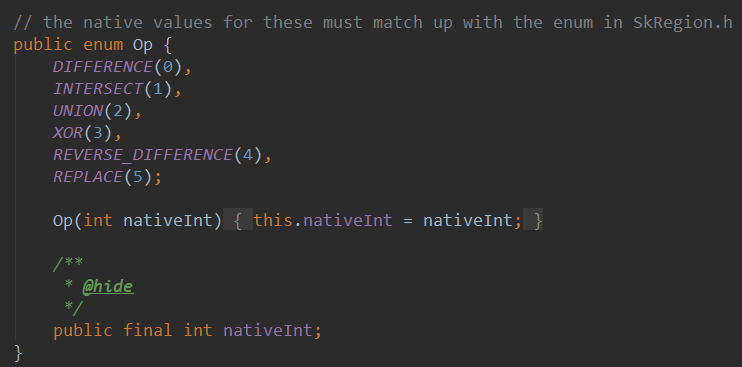
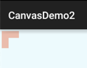
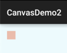
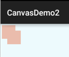
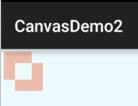
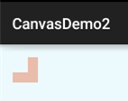
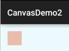
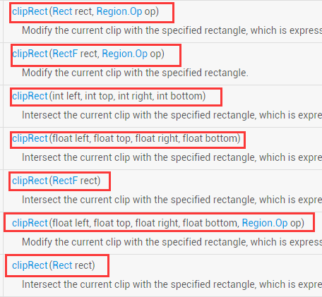
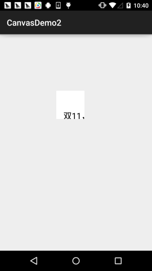
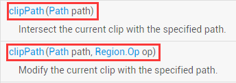

この節のはじめに：
この節では引き続きAndroid描画シリーズの詳解、Canvas API詳解(Part 2)を紹介します。今日解説するのはCanvasのClipXxxメソッド群です！ドキュメントで提供されているClipメソッドには3つのタイプがあります：clipPath( )，clipRect( )，clipRegion( )；
Path、Rect、Regionの異なる組み合わせによって、ほぼ任意の形状のクリップ領域をサポートできます！
Path：開いたり閉じたりした曲線、線で構成される複雑な図形
Rect：矩形領域
Region：領域の組み合わせと理解できます。例えば、2つの領域を加算、減算、結合、排他的論理和などができます！
Region.OpはRegionがサポートする領域間演算の種類を定義しています！後ほど説明します。もう1点言っておくと、普段私たちが理解している「切り抜き」は既存の図形に対してClipを行うかもしれませんが、AndroidではCanvasに対してClipを行うのは描画前に行う必要があります。描画後にCanvasへClipしても、すでに描かれた図形には影響しません。Clipは図形ではなくCanvasに対して行うことを覚えておいてください。さて、余計な話はやめて、本節の内容を始めましょう！
公式APIドキュメント：Canvas
1.Region.Opの組み合わせ方式の詳解
実際の難所はこれに尽きます。Regionは領域を表し、Canvasレイヤー上のある閉じた領域を示します！もちろん、時間があればこのクラスを自分でじっくり調べてもいいですが、私たちが通常注目するのはその列挙値（enum値）の1つです：Op

それでは、各列挙値の役割を見ていきましょう。2つのクリップ領域AとBを仮定し、Region.Opの対応する列挙値を呼び出すとします：
DIFFERENCE：AとBの差集合範囲、すなわちA - B。この範囲内の描画内容のみが表示されます。
INTERSECT：すなわちAとBの共通部分範囲、この範囲内の描画内容のみが表示されます。
UNION：すなわちAとBの和集合範囲、すなわち両方が含む範囲の描画内容はすべて表示されます。
XOR：AとBのXOR（対称差）範囲、この例ではAとBの和集合からAとBの共通部分を除いた範囲で、この範囲内の描画内容のみが表示されます。
REVERSE_DIFFERENCE：BとAの差集合範囲、すなわちB - A。この範囲内の描画内容のみが表示されます。
REPLACE：AとBの集合の状態に関係なく、Bの範囲はすべて表示されます。Aと共通部分があれば、Aの共通部分の範囲を上書きします。
集合を学んだことがあれば、Venn図（ベン図）を描けば一目瞭然です。学んだことがない？大丈夫、実際の結果を例で試してみましょう！ブラシを初期化して矩形を描くメソッドを書きます：
private void init() {
mPaint = new Paint();
mPaint.setAntiAlias(true);
mPaint.setStrokeWidth(6);
mPaint.setColor(getResources().getColor(R.color.blush));
}
private void drawScene(Canvas canvas){
canvas.drawRect(0, 0, 200, 200, mPaint);
}
Op.DIFFERENCE：
canvas.clipRect(10, 10, 110, 110); //第一个 canvas.clipRect(50, 50, 150, 150, Region.Op.DIFFERENCE); //第二个 drawScene(canvas);
結果：

まず(10,10)を起点とし、次に(50,50)を起点として、2つの100*100の矩形をクリップした結果は次の通りです：
AとBの差集合 = A - (AとBの共通部分)
Op.INTERSECT：
canvas.clipRect(10, 10, 110, 110); //第一个 canvas.clipRect(50, 50, 150, 150, Region.Op.INTERSECT); //第二个 drawScene(canvas);
結果：

まず(10,10)を起点とし、次に(50,50)を起点として、2つの100*100の矩形をクリップした結果は次の通りです：AとBの共通部分 = AとBが交わる部分
Op.UNION：
canvas.clipRect(10, 10, 110, 110); //第一个 canvas.clipRect(40, 40, 140, 140, Region.Op.UNION); //第二个 drawScene(canvas);
結果：

まず(10,10)を起点とし、次に(50,50)を起点として、2つの100*100の矩形をクリップした結果は次の通りです：AとBの和集合 = Aの領域 + Bの領域
Op.XOR：
canvas.clipRect(10, 10, 110, 110); //第一个 canvas.clipRect(50, 50, 150, 150, Region.Op.XOR); //第二个 drawScene(canvas);
結果：

まず(10,10)を起点とし、次に(50,50)を起点として、2つの100*100の矩形をクリップした結果は次の通りです：AとBのXOR（対称差） = AとBの和集合 - AとBの共通部分
Op.REVERSE_DIFFERENCE：
canvas.clipRect(10, 10, 110, 110); //第一个 canvas.clipRect(50, 50, 150, 150, Region.Op.REVERSE_DIFFERENCE); //第二个 drawScene(canvas);
結果：

まず(10,10)を起点とし、次に(50,50)を起点として、2つの100*100の矩形をクリップした結果は次の通りです：BとAの差集合 = B - (AとBの共通部分)
Op.REPLACE
canvas.clipRect(10, 10, 110, 110); //第一个 canvas.clipRect(50, 50, 150, 150, Region.Op.REPLACE); //第二个 drawScene(canvas);
結果：

まず(10,10)を起点とし、次に(50,50)を起点として、2つの100*100の矩形をクリップした結果は次の通りです：：AとBの集合の状態に関係なく、Bの範囲はすべて表示されます。Aと共通部分があれば、Aの共通部分の範囲を上書きします。
2.Region.Opの使用例：
例の参考元：Android 2D Graphics学習（二）、Canvas編2、CanvasクリップとRegion、RegionIterator
実行結果のスクリーンショット：

主要部分のコード MyView.java：
/**
* Created by Jay on 2015/11/10 0010.
*/
public class MyView extends View{
private Bitmap mBitmap = null;
private int limitLength = 0; //
private int width;
private int heigth;
private static final int CLIP_HEIGHT = 50;
private boolean status = HIDE;//显示还是隐藏的状态，最开始为HIDE
private static final boolean SHOW = true;//显示图片
private static final boolean HIDE = false;//隐藏图片
public MyView(Context context) {
this(context, null);
}
public MyView(Context context, AttributeSet attrs) {
super(context, attrs);
mBitmap = BitmapFactory.decodeResource(getResources(), R.mipmap.img_meizi);
limitLength = width = mBitmap.getWidth();
heigth = mBitmap.getHeight();
}
public MyView(Context context, AttributeSet attrs, int defStyleAttr) {
super(context, attrs, defStyleAttr);
}
@Override
protected void onDraw(Canvas canvas) {
Region region = new Region();
int i = 0;
while (i * CLIP_HEIGHT <= heigth) {//计算clip的区域
if (i % 2 == 0) {
region.union(new Rect(0, i * CLIP_HEIGHT, limitLength, (i + 1) * CLIP_HEIGHT));
} else {
region.union(new Rect(width - limitLength, i * CLIP_HEIGHT, width, (i + 1)
* CLIP_HEIGHT));
}
i++;
}
canvas.clipRegion(region);
canvas.drawBitmap(mBitmap, 0, 0, new Paint());
if (status == HIDE) {//如果此时是隐藏
limitLength -= 10;
if(limitLength <= 0)
status=SHOW;
} else {//如果此时是显示
limitLength += 5;
if(limitLength >= width)
status=HIDE;
}
invalidate();
}
}
実装の分析：
初期化時に幅と高さを取得し、ループします。画像を1本ずつの線に分割すると考えてください。ループ条件は「i × 各線の高さが高さ以下であること」です。そして線は2つの場合に分かれ、呼び出しているのはRegionのunion、つまり結合方式がUNIONのクリップ方法です。最後にその時点の画像を表示するかどうかを判断し、非表示と表示の状況で異なる処理を行い、最後にinvalidate()を呼び出して再描画します！かなり簡単なので、自分で理解してみてください~
もう1点：Canvasの変換はclipRegionには効果がありません。
3.clipRectメソッドの詳解：
clipRectには7つのオーバーロードメソッドがあります：

パラメータの説明は次の通りです：：
rect：Rectオブジェクト。クリップ領域の範囲を定義するために使用します。RectとRectFは機能が似ており、精度と提供されるメソッドが異なるだけです。
left：矩形クリップ領域の左端の位置
top：矩形クリップ領域の上端の位置
right：矩形クリップ領域の右端の位置
bottom：矩形クリップ領域の下端の位置
op：クリップ領域の組み合わせ方式
上記の4つの値は浮動小数点数型または整数型にできます。
使用例：
mPaint = new Paint();
mPaint.setAntiAlias(true);
mPaint.setColor(Color.BLACK);
mPaint.setTextSize(60);
canvas.translate(300,300);
canvas.clipRect(100, 100, 300, 300); //设置显示范围
canvas.drawColor(Color.WHITE); //白色背景
canvas.drawText("双11，继续吃我的狗粮...", 150, 300, mPaint); //绘制字符串
実行結果：

上記の例で、気づいたでしょうか？clipRectはCanvasの変換の影響を受けます。白い領域は描画されない領域です。つまりclipRectがクリップするのはキャンバスであり、私たちの描画はこのクリップ後のキャンバス上で行われるのです！その領域を超えたものは表示されません！
4.clipPathメソッドの詳解：
clipRectと比べて、clipPathにはオーバーロードメソッドが2つしかありません。使用方法は非常に簡単で、自分でPathを描画して渡すだけです！

使用例：
ここでは以前ImageViewで書いた円形ImageViewの例を再利用します~
実装コード：
カスタムImageView：RoundImageView.java
/**
* Created by coder-pig on 2015/7/18 0018.
*/
public class RoundImageView extends ImageView {
private Bitmap mBitmap;
private Rect mRect = new Rect();
private PaintFlagsDrawFilter pdf = new PaintFlagsDrawFilter(0, Paint.ANTI_ALIAS_FLAG);
private Paint mPaint = new Paint();
private Path mPath=new Path();
public RoundImageView(Context context, AttributeSet attrs) {
super(context, attrs);
init();
}
//传入一个Bitmap对象
public void setBitmap(Bitmap bitmap) {
this.mBitmap = bitmap;
}
private void init() {
mPaint.setStyle(Paint.Style.STROKE);
mPaint.setFlags(Paint.ANTI_ALIAS_FLAG);
mPaint.setAntiAlias(true);// 抗锯尺
}
@Override
protected void onDraw(Canvas canvas) {
super.onDraw(canvas);
if(mBitmap == null)
{
return;
}
mRect.set(0,0,getWidth(),getHeight());
canvas.save();
canvas.setDrawFilter(pdf);
mPath.addCircle(getWidth() / 2, getWidth() / 2, getHeight() / 2, Path.Direction.CCW);
canvas.clipPath(mPath, Region.Op.REPLACE);
canvas.drawBitmap(mBitmap, null, mRect, mPaint);
canvas.restore();
}
}
レイアウトコード：activity_main.xml:
<com.jay.demo.imageviewdemo.RoundImageView
android:id="@+id/img_round"
android:layout_width="200dp"
android:layout_height="200dp"
android:layout_margin="5px"/>
MainActivity.java:
public class MainActivity extends AppCompatActivity {
private RoundImageView img_round;
@Override
protected void onCreate(Bundle savedInstanceState) {
super.onCreate(savedInstanceState);
setContentView(R.layout.activity_main);
img_round = (RoundImageView) findViewById(R.id.img_round);
Bitmap bitmap = BitmapFactory.decodeResource(getResources(),R.mipmap.meinv);
img_round.setBitmap(bitmap);
}
}
実行結果のスクリーンショット：

また、この方法で作成した角丸ImageViewはジャギー（ギザギザ）が目立ちます。たとえPaintやCanvasにアンチエイリアスを設定しても効果がありません~高い品質を求めるなら、Xfermode-PorterDuffで画像の混合を設定することで実現でき、基本的にジャギーは発生しません。次を参照してください：Android基礎入門チュートリアル——8.3.6 Paint APIの—— XfermodeとPorterDuff詳解(三)
5.この節のサンプルコードのダウンロード：
この節のまとめ：
さて、この節ではCanvasのクリップにある3つのメソッド：clipPath()、clipRect()、clipRegion()を解説しました。難しいのは最後のものでしょう。6種類の異なるOpの組み合わせ方ですが、実は難しくありません。集合の概念に過ぎません。最初に置いてあるので、理解してしまえば大丈夫です。clipPath()とclipRect()には特に難しい点はありません~そうそう、今日は11月11日（独身の日）ですが、もうショッピングで散財しましたか~